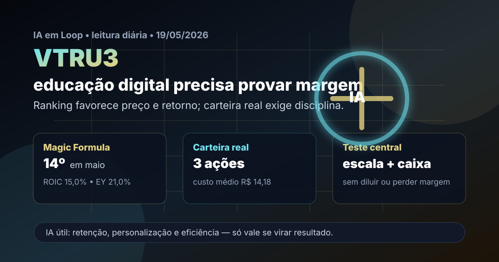

19/05: VTRU3, educação digital e IA no teste de margem
A sequência diária sai de tecnologia/serviços e entra em educação. VTRU3 aparece na Magic Formula, está na carteira real e combina três forças que exigem leitura fria: ensino digital, potencial de eficiência com IA e risco de diluição/execução em um setor pressionado.

Leitura visual: VTRU3 entra pelo preço e retorno sobre capital, mas a tese só fica melhor se educação digital e IA virarem margem, retenção, caixa e crescimento sem diluição excessiva.
O sinal do dia
VTRU3 é uma escolha útil porque não repete os últimos nomes analisados e conversa com a carteira real da Magic Formula. No ranking de maio do IA em Loop, o ativo aparece em 14º lugar, com ROIC de 15,0%, earnings yield de 21,0%, EV/EBIT próximo de 4,76 e score 50.
A fotografia de mercado reforça o motivo da cautela. Em consulta ao Fundamentus feita em 19/05, VTRU3 aparecia a R$ 13,53, com P/L de 1,79, P/VP de 0,54, margem EBIT de 37,4%, ROIC de 14,8%, ROE de 29,9% e dividend yield indicado de 0,2%. Números baratos demais quase sempre pedem uma pergunta: o mercado está vendo oportunidade ou está cobrando prêmio por risco real?
Resposta curta: VTRU3 parece uma tese barata de execução em educação digital, não uma compra automática. O ranking coloca o papel no radar e a carteira real já carrega uma posição pequena; aumentar exposição exige prova de que margem, caixa, captação de alunos e integração societária seguem de pé depois do crescimento.
Por que VTRU3 hoje?
A carteira real da Magic Formula possui 3 ações de VTRU3, com custo de R$ 14,18 por ação, valor comprado de R$ 42,54 e peso aproximado de 5,6%. É uma posição pequena, coerente com um ativo de menor liquidez e maior risco de execução.
As notícias recentes do setor também tornam a leitura relevante. Em maio, leituras públicas de mercado destacaram reações distintas aos balanços de educacionais no 1T26; em abril, VTRU3 apareceu associada a um follow-on na B3 voltado a investidores profissionais; e, no fim de 2025, a companhia havia aprovado a incorporação da Cesumar com eficácia planejada para 2026. A combinação é clara: há potencial de escala, mas também há risco de integração, preço de oferta, diluição e competição por alunos.
| Item | Leitura verificada | Implicação |
|---|---|---|
| Ranking | 14º na Magic Formula de maio | Entra no radar por qualidade/preço, abaixo dos nomes já repetidos recentemente |
| Carteira real | 3 ações; R$ 42,54; 5,6% da carteira Magic Formula | Posição pequena, adequada para acompanhar sem concentrar demais |
| Valuation | P/L 1,79; P/VP 0,54 | Preço muito descontado, mas provavelmente embute dúvida sobre sustentabilidade |
| Rentabilidade | ROIC 15,0% no ranking; 14,8% no Fundamentus; ROE 29,9% | Retorno interessante, desde que não venha de efeito pontual ou estrutura frágil |
| Setor | Educação superior e digital sob pressão competitiva | Precisa de captação, retenção, ticket e eficiência melhores que os pares |
A tese: EAD barato ou escala com qualidade?
VTRU3 não deve ser lida apenas como “educação online”. Educação a distância pode ser escalável, mas escala ruim destrói valor: desconto agressivo, evasão alta, suporte fraco e marca enfraquecida podem corroer margem. A tese boa é outra: base digital com custo marginal menor, captação eficiente, cursos com demanda, retenção de alunos e integração capaz de transformar tamanho em caixa.
A pergunta prática é: o desconto compensa o risco? A leitura atual do IA em Loop é “sim, compensa para acompanhar em peso pequeno; ainda não compensa para transformar em aposta grande”. O motivo é que o preço parece descontado e o retorno sobre capital é aceitável, mas follow-on, integração e setor competitivo exigem evidência operacional antes de aumentar a mão.
Pontos positivos
P/L muito baixo, P/VP abaixo de 1, ROE alto, ROIC razoável, presença na carteira real e exposição a um modelo digital que pode escalar com custo menor.
Riscos
Baixa liquidez relativa, diluição em oferta de ações, integração da Cesumar, pressão competitiva, inadimplência, evasão e risco de margem se captação vier com muito desconto.
Onde a IA ajuda
Personalização de trilhas, tutoria automatizada, atendimento ao aluno, prevenção de evasão, análise de dados acadêmicos, produção de conteúdo assistida e eficiência em backoffice.
Onde a IA engana
Se a tecnologia não reduzir evasão, custo de atendimento, tempo de produção de conteúdo ou despesa administrativa, ela vira apenas marketing. Para o acionista, IA precisa aparecer no caixa.
Compra, venda ou espera?
Pelos critérios do IA em Loop, VTRU3 fica como manutenção com viés de estudo para reforço pequeno. A posição atual é suficiente para participar caso a tese melhore, mas pequena o bastante para não transformar risco de setor e diluição em problema de carteira.
- Gatilho de compra: captação líquida melhor, margem EBIT preservada, caixa operacional forte, integração sem surpresa e sinais de que IA reduz evasão ou custo por aluno.
- Gatilho de espera: preço barato, mas sem clareza sobre diluição, follow-on, integração, inadimplência ou qualidade de crescimento.
- Gatilho de venda/redução: queda persistente de margem, necessidade recorrente de capital, piora de retenção, crescimento comprado a qualquer custo ou perda de confiança na execução.
O que isso muda na carteira
Na carteira real, VTRU3 ajuda a diversificar a Magic Formula para educação, setor que já aparece com CSED3 e outros nomes no ranking. Isso é bom para não ficar só em commodities, seguros e construção; mas também cria uma concentração temática em educacionais se novos aportes forem feitos sem cuidado.
A disciplina prática é comparar VTRU3 com CSED3, ANIM3 e SEER3 antes de qualquer reforço. Se a empresa mais barata também for a que mais dilui, integra pior ou entrega menos caixa, o desconto pode ser armadilha. Se provar escala com margem, o desconto vira oportunidade.
Checklist antes de agir
- Conferir detalhes do follow-on, preço, diluição e uso dos recursos.
- Ler o release trimestral separando crescimento de receita, captação, evasão, ticket, margem e caixa.
- Acompanhar a integração da Cesumar e possíveis efeitos no balanço de 2026.
- Comparar VTRU3 com pares educacionais do ranking para evitar dobrar risco no mesmo setor.
- Usar R$ 13,53 apenas como fotografia de consulta; preço de execução deve ser validado no home broker/B3.